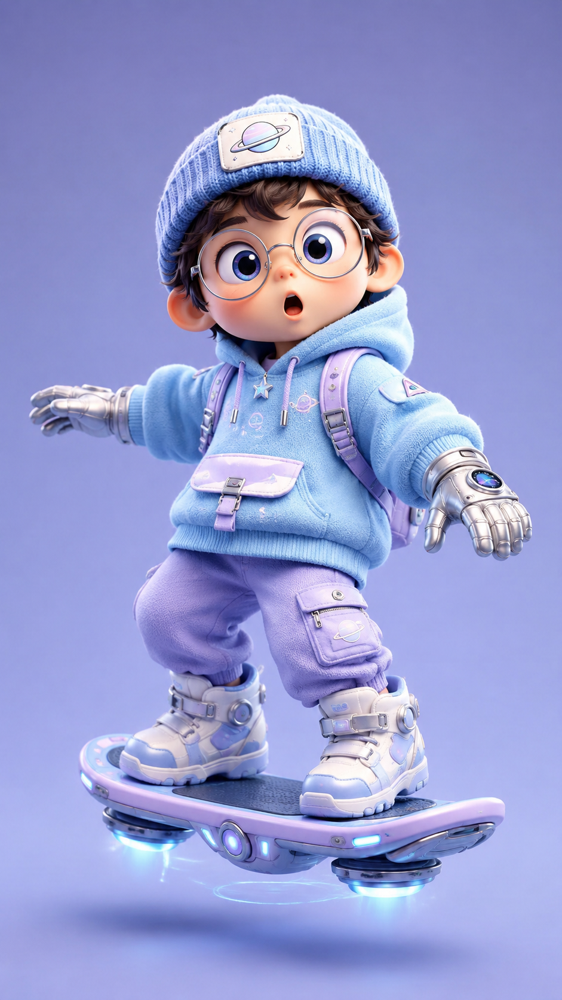

Use the uploaded reference image to preserve the same character identity and style. Create a cute stylized 3D animated image of the same boy riding a futuristic hoverboard high in a beautiful dreamy sky...
Animate the uploaded image into an 8-second video. The cute chibi boy gently glides on the glowing hoverboard above pastel clouds, arms out for balance, blue thrusters pulse gently, stars sparkle...